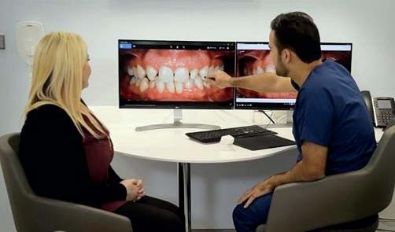
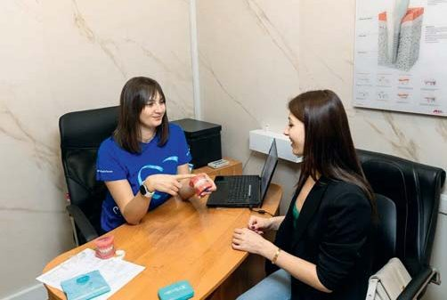
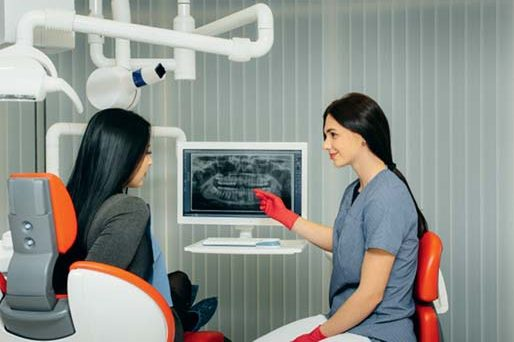

Своя справа · журнал «ДентАрт» 2023 №2
Служба кураторів лікування у стоматологічній клініці
Service of curators of treatment in a dental clinic
Куратор лікування (він же координатор лікування) — це спеціальний співробітник, який бере на себе функції спілкування з пацієнтом та безпосередньо веде продаж медичних послуг. Він знайомиться з пацієнтом і розповідає про клініку; супроводжує його в медичній установі і відповідає на питання, що виникають; роз'яснює план лікування і підбирає комфортні умови оплати.
Однак керівники багатьох клінік вважають, що поява куратора — лише додаткова стаття витрат. Щоб не потрапити в таку ситуацію, важливо правильно організувати роботу служби кураторів лікування.
Чому клініці вигідно впровадити службу кураторів?
Куратор звільняє час основних фахівців. Важливим показником для стоматологічної клініки є високий середній чек. На нього впливають професіоналізм лікаря та його комунікативні навички. Саме лікування має бути якісним, а щоб пацієнт зацікавився додатковим комплексом послуг, лікареві потрібно його якісно та переконливо презентувати.
Якщо у клініці немає служби кураторів, то обов'язок деталізації плану лікування теж лягає на лікаря. До того ж, йому доводиться врегульовувати з пацієнтом фінансову складову. На це йде багато часу. Крім того, лікар не любить, а буває, і не вміє віртуозно розповідати про умови банківського кредитування, розстрочку платежів тощо.
Куратор лікування — це фахівець із продажу. Його основне завдання — переконати пацієнта у доцільності рекомендованого плану лікування і звернути увагу на якісніші, а відтак дорожчі матеріали. Якщо пацієнт обмежений у грошах, куратор підкаже актуальні пропозиції клініки або підбере банківський продукт.
Якщо у закладі є служба кураторів, то після закінчення консультації лікар передає пацієнта кураторові для деталізації плану лікування та укладання договору. У лікаря звільняється час. Тепер у нього є можливість прийняти більше пацієнтів і заробити додаткові гроші. Вартість його години праці стає вищою.
Куратори підвищують кількість постійних пацієнтів у клініці. Важливим показником є відношення кількості пацієнтів, що залишилися з клінікою, до загальної кількості первинних пацієнтів. Ми вважаємо, що пацієнт залишився, коли він зробив щось, крім тієї першої потреби, з якою спочатку звернувся. Наприклад, прийшов на гігієну ротової порожнини, а додатково зробив комп'ютерну томографію та відбілювання. Або звернувся з гострим болем, а потім зацікавився протезуванням.
Одна з найчастіших причин того, що первинні пацієнти більше не звертаються у клініку, — погані комунікативні навички лікарів, проблеми у встановленні первинного контакту з пацієнтами. Вводячи службу кураторів лікування, ви посилюєте цю компетенцію. Лікар бере на себе медичну складову, а куратор — переговорну (комунікативну) та маркетингову. У результаті збільшується заповнення розкладу, зростає кількість постійних пацієнтів, що збільшує фінансовий оборот медичного закладу. Проте введення кураторів у клініку не скасовує того, що лікар має переконливо презентувати план лікування. Якщо лікар не викликає довіри у пацієнта, кураторові дуже складно отримати гарний результат.
Чому куратор лікування зазвичай подобається пацієнтам?
Він робить час у клініці комфортним. Куратор знайомиться з первинним пацієнтом одразу після його приходу в клініку. Він заповнює час очікування прийому невимушеним спілкуванням. Відтак перші хвилини пацієнта в клініці стають приємними та інформативними: він може поставити запитання про лікаря і методи лікування, технології, якість матеріалів…
По клініці пацієнт завжди ходить у супроводі куратора. У супроводі куратора він не ризикує зайти не туди чи заблукати. При вході до кабінетів діагностики та лікування куратор відрекомендовує пацієнта і уточнює мету його візиту. Для людей зазвичай відвідини стоматолога — стресова ситуація. Тому стандартні запитання можуть збентежити і створити незручність.
У кабінеті лікаря куратор не залишає пацієнта, а чекає закінчення процедури, сидячи неподалік. Він мовчки слухає та робить позначки. Це допомагає подальшій комунікації і позбавляє пацієнта необхідності двічі повторювати те саме.
Якщо в ході лікування знадобиться консультація суміжного фахівця, інформацію про стан пацієнта йому передасть лікар. У цей час він залишить кабінет, а пацієнт залишиться сидіти у стоматологічному кріслі. Щоб зробити ситуацію менш дискомфортною, куратор лікування може заповнити незручну паузу. Доречно запитати, чи сподобався лікар пацієнтові, і поділитися відгуками інших пацієнтів цього лікаря.
Після того, як усі потрібні огляди пройшли, консультуючий лікар презентує комплексний план лікування. Завдання лікаря — розповісти про переваги з медичної точки зору та мотивувати на лікування. Куратор також робить собі позначки, і якщо пацієнт щось забуде або чимось знехтує, йому буде легко уточнити.
Куратор забезпечує всебічну допомогу. Одне із завдань куратора — забезпечити точну та в повному обсязі інформацію, коли пацієнт, повідомляючи інформацію одному зі співробітників, транслює її всій клініці. Для цього наприкінці дня куратор скидає звіт про свою роботу в створену групу в месенджері, наприклад у Viber, Telegram, або веде в CRM, де описує протокол роботи з кожним пацієнтом. Які потреби, які були страхи, що він виявив у процесі розмови? Яких домовленостей було досягнуто? Якщо пацієнт сумнівається, чому?
Бере на себе рутинну роботу. Коли пацієнт уперше приходить у клініку, йому пропонують заповнити анкету. Це трудомістка процедура, і якщо людина робить це сама, є ризик внесення неправильної інформації. На допомогу приходить куратор лікування. Він сідає поруч із пацієнтом і під його диктування заповнює всю документацію. Куратор знає, куди та які дані потрібно внести, щоб клініці було зручно їх використовувати. Таким чином, ви максимально розвантажуєте пацієнта від того, щоб він витрачав свій час і зусилля на неприємні дії. Робота з договором та доповненнями до нього відбувається за цим же принципом.
Підвищує статус пацієнта. Завдання куратора лікування в ідеальному варіанті — зробити сервіс 24/7. Будь-коли надати пацієнтові потрібну інформацію, проявити турботу, вирішити проблему, надати підтримку, виявити емпатію. Коли в клініці є куратор, якому завжди можна зателефонувати, який бере участь у роботі з пацієнтом, — це зручно. Пацієнт розуміє, що отримує послугу вищого класу, ніж у клініці без служби кураторів.
Як куратор підвищує продаж стоматологічних послуг?
Розширює план лікування. Між лікарем і пацієнтом зазвичай існує певна дистанція. Через це пацієнт часто не перепитує лікаря, якщо чогось не зрозумів або не почув, і не ставить запитань. Це може стати причиною відмови від лікування.
Куратор встановлює з клієнтом більш довірчі стосунки, тому йому простіше отримати зворотний зв'язок на план лікування і переконати в доцільності запропонованих кроків. Коли сама схема лікування пацієнтові зрозуміла і не викликає заперечень, час розповісти про супутні послуги. Найчастіше пацієнт хоче заощадити кошти і не бачить своєї вигоди у додаткових витратах. Завдання куратора — показати, як дорожчі матеріали та комплексний догляд допоможуть пацієнтові заощадити у перспективі. Якщо пацієнт зацікавився розширеним планом лікування, але має сумнів, куратор може мотивувати його спецпропозицією. Для цього він сам повинен розуміти, які акції діють у клініці або навіть особисто брати участь у їхньому створенні.
Пропонує найвигідніші умови. Одна з найчастіших причин відмови від лікування — дорого! Куратор лікування легко зніме це заперечення за допомогою розстрочування. Більшість клінік працює з банківськими продуктами, але часто адміністратори клініки, лікарі не розуміють схему роботи і не можуть подати цю інформацію пацієнтам. Щоб заповнити цю прогалину, найефективніше звернутися до банку і попросити провести майстер-клас для кураторів. Співробітники навчаться презентувати банківські товари, і частка послуг, сплачених у кредит, зросте.
Повертає пацієнтів у клініку. Існує група пацієнтів, які були на консультації, але не підписали договір. Вони познайомилися з клінікою, отримали план лікування, однак рішення не ухвалили. При цьому співробітники витратили час і зусилля. Ці вкладення не окупляться, якщо пацієнт у клініку більше не прийде. Це той випадок, коли потрібен максимально ефективний телефонний продаж. Саме обдзвонювання таких пацієнтів — першочергове завдання куратора, який супроводжував консультацію.
Які ключові показники ефективності призначити, щоб куратор лікування працював максимально ефективно?
На початку роботи куратора. Коли куратор тільки починає працювати в клініці, він ще не має великого потоку продажів. Зазвичай випробувальний термін триває 3 місяці, протягом яких слід гарантувати йому певний мінімум. Куратор отримує фіксовану частину та відсоток від продажів. Далі він може продовжити працювати за цією схемою або перейти на відсоток від продажів без фіксованої частини. Другий варіант кращий. Річ у тім, що люди, які справді орієнтовані на продаж та мотивовані на результат, за такої схеми запрацюють активніше. У виграші буде й клініка.
Для визначення самого відсотка використовуються кілька критеріїв. Однак не потрібно платити відразу за все або робити складну схему продажів. Інструмент мотивації працює лише тоді, коли схема для співробітника прозора. Тому показники преміювання слід додавати поступово і щоразу по пунктах пояснювати кураторові, як заробити більше.
Виконання особистого фінансового плану. Для кожного куратора після тримісячного випробувального терміну формується фінансовий план — обсяг продажів на місяць. Одним з ефективних інструментів мотивації є велика таблиця на стіні в ординаторській. У таблиці — кількість імплантів, які встановив кожен хірург, обіг кожного лікаря. Це допомагає візуалізувати результати і породжує дух змагання. Подібну таблицю з індивідуальними фінансовими планами можна вести і для кураторів. Висіти вона має подалі від очей пацієнтів.
Виконання загального плану клініки. Загальний план клініки допомагає працівникам зрозуміти цінність взаємодії. Якщо не прив'язувати премію до цього показника, може статися неприємна ситуація.
Таким чином, важливо, щоб кожен працівник відчував себе членом команди, зокрема й фінансово. Якщо колектив спільно виконує фінансовий план, то відсоток кожного куратора буде вищим. Кожному куратору вигідно піклуватися про всіх пацієнтів у клініці, тому що так чи інакше від цього залежить його дохід.
Продаж нової послуги. Наприклад, ви вирішуєте запровадити нову послугу — мікропротезування. Ви навчили кількох лікарів, і вони готові працювати. Тільки продаж чомусь не йде. Можна виправити цю ситуацію за допомогою інформування кураторів. Розповісти їм, що відновлення зуба за допомогою пломби коштує 3000 грн, а вкладкою — вже 9000 грн. Премія з одного продажу виходить утричі більша. Можна на якийсь період збільшити бонус з продажу нової послуги. Припустимо, базова ставка 4 %, а з мікропротезування буде 6 % — в 1,5 раза більше. Так ми стимулюємо кураторів до продажу тих методик, які вважаємо пріоритетними.
Повернення пацієнтів, які відмовились. У кожній клініці є пацієнти, які не з'являлися після первинного прийому. Якщо у клініці недостатнє завантаження, можна поставити кураторові завдання провести з такими клієнтами телефонні переговори. У разі успіху його бонус з оплати буде більшим, ніж за звичайного пацієнта.
Подорожчання плану лікування. Припустимо, у нас є план лікування з імплантації з подальшим встановленням металокерамічних коронок. Пацієнт погоджується, що лікування потрібне, і куратор починає з ним працювати. У якийсь момент переговорів куратор лікування пояснює різницю між матеріалами, і пацієнт вирішує ставити не металокераміку, а діоксид цирконію. За це кураторові слід дати додаткову винагороду.




Робота куратора лікування у стоматологічній клініці: знайомство з пацієнтом, супровід по клініці, присутність під час консультації та робота з планом лікування.
Висновки
Поява служби кураторів у клініці — це непросте рішення для керівника або власника. Часто саме керівники успішних клінік, де лікарі самі дають раду з комунікацією та продажами, бачать у цьому лише додаткові витрати.
Але завдання куратора — не просто провести пацієнта від лікаря до каси і прийняти гроші, а дати результат. Він повинен збільшити продажі, підвищити лояльність клієнтів і їхнє бажання лікуватися саме в цій клініці.
За рахунок куратора оборот одного лікаря може збільшитися у півтора раза. Відповідно, ви повернете гроші, які витратили на куратора, і ще заробите понад те. Тому не варто боятися нововведень. При грамотному підході вони себе окуплять.